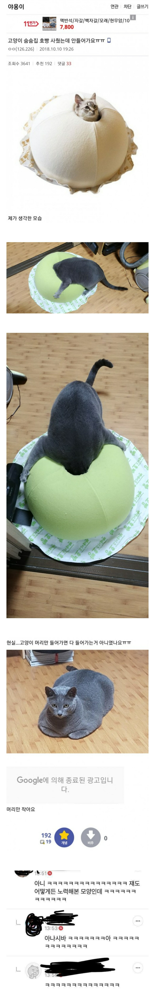
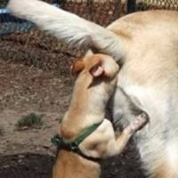
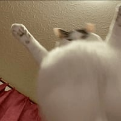
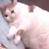
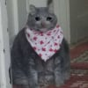

54 · 14 · 11 시간 전 · 원문

나름 노력함
수집 당시 댓글 14개
고칼로리식단 · 21 시간 전
억지로 냅다 들어가면 들어가기야 할텐데 그랬다간 얼굴만 쏙내밀고 못나오는 대참사가 발생함
kruise · 21 시간 전
stuck in wall
↳ 답글 · 번생각하고글적기 · 17 시간 전
아흣...! 누구야...!옹!
↳ 답글 · 메카다나카 · 17 시간 전

꼬꼬마동산 · 21 시간 전
ㅋㅋㅋㅋㅋㅋㅋㅋㅋㅋ 녹아내린 죠스바같네 ㅋㅋㅋ
에궁님 · 17 시간 전
ㅋㅋㅋㅋㅋㅋㅋㅋㅋㅋㅋㅋㅋㅋㅋ
구라왕 · 15 시간 전
자기 눈에 안보이면 숨은거임
싼디스크 · 11 시간 전
등치에 비해서 너무 작잖아
개봉개봉 · 11 시간 전
풍채봐라ㅋㅋ
스프링클 · 11 시간 전
고구마고양이 · 11 시간 전

s4gd2we · 11 시간 전

뽀이 · 11 시간 전

OMOTO · 11 시간 전
듬직-

억지로 냅다 들어가면 들어가기야 할텐데
그랬다간 얼굴만 쏙내밀고 못나오는 대참사가 발생함